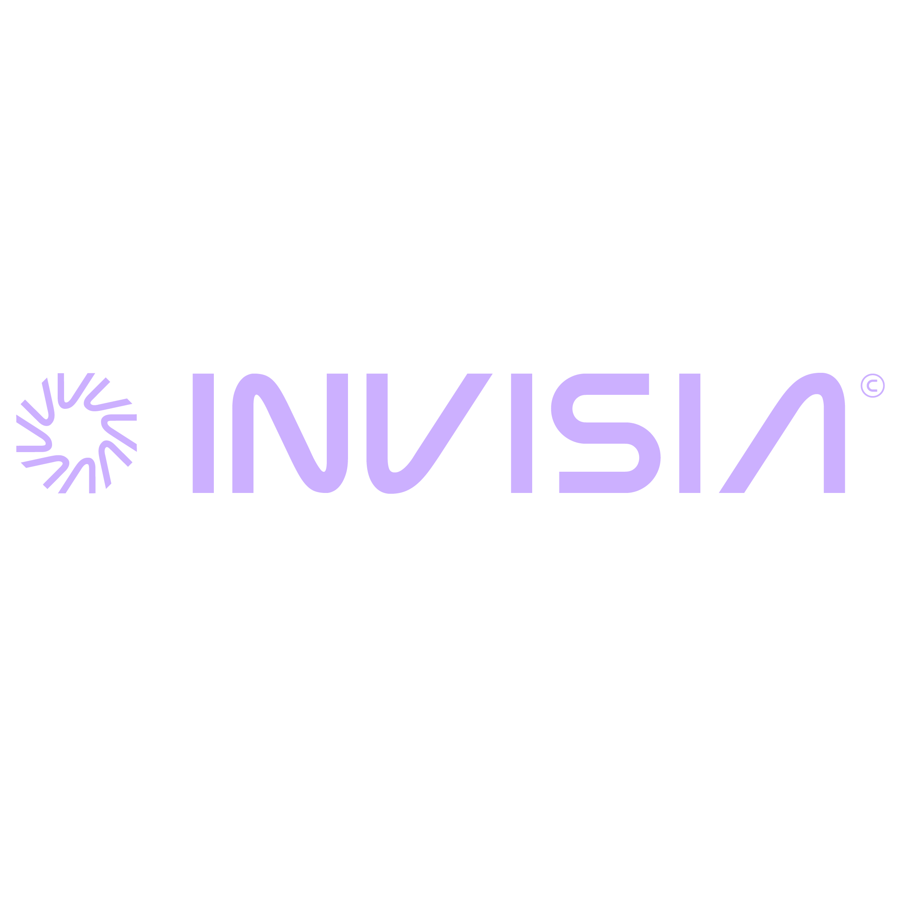

GUIA DO PARCEIRO
START
Seu manual pós-pílula. Da instalação ao primeiro resultado em 48 horas.
Pré-Instalação + Instalação
Siga nessa ordem. Pular etapas é a causa número um de erro. Leva menos de 1 hora.
Pré-Requisitos
Antes de instalar qualquer coisa
Não pule essa etapa. Falta de espaço e falta de conta são os dois motivos mais comuns de tudo travar no meio do caminho.
- 1 Verificar espaço livre: Mac: Ajustes do Sistema > Geral > Armazenamento (precisa de 15GB+). Windows: Configurações > Sistema > Armazenamento. Se estiver abaixo: apague vídeos antigos e esvazie a lixeira.
- 2 Instalar WhatsApp Desktop: facilita copiar comandos para o Terminal sem erro de formatação. Mac: App Store. Windows: Microsoft Store. Procure "WhatsApp".
- 3 Criar conta em claude.ai — use o mesmo email que vai usar no plano. Guarde o email e a senha.
- 4 Assinar plano Pro em claude.ai — R$109/mês é o mínimo para começar. Sem o plano, o Claude Code não autentica.
Instalar Node.js
O motor que faz o Claude Code funcionar
O Node.js é um programa obrigatório. Sem ele, o Claude Code simplesmente não instala. Instala uma vez, esquece para sempre.
-
Mac
Acesse
nodejs.org> clique em "macOS Installer" > Next > Next > Install > senha do Mac se pedir > FECHE o Terminal completamente > abra de novo > teste:node --version -
Win
Acesse
nodejs.org> clique em "Windows Installer (LTS)" > Next > Install > FECHE o PowerShell completamente > reabra > teste:node --version
Instalar Claude Code
A IA que roda no seu computador
Claude Code é diferente do site claude.ai. Ele roda no Terminal e executa tarefas reais no seu computador — não é só conversa.
-
Mac
Abra o Terminal (Cmd + Espaço > digite "Terminal" > Enter). Digite:
npm install -g @anthropic-ai/claude-codee aperte Enter. Se pedir senha: digite normalmente — os caracteres NÃO aparecem na tela, é normal! Aperte Enter ao terminar. -
Win
Abra o PowerShell (tecla Windows > digite "PowerShell" > Enter). Digite:
npm install -g @anthropic-ai/claude-code -
Err
Se aparecer "permission denied": Mac: use
sudo npm install -g @anthropic-ai/claude-code. Windows: feche e abra o PowerShell como Administrador (clique com botão direito > "Executar como administrador").
Primeiro Acesso
Autenticar e entrar no Claude Code
A instalação terminou. Agora é hora de entrar pela primeira vez e autenticar com sua conta claude.ai.
-
1
No Terminal, digite
claudee aperte Enter - 2 Escolha o tema Escuro quando aparecer a opção
- 3 O navegador vai abrir automaticamente para autenticar — faça login com o mesmo email do plano Pro
- 4 Volte ao Terminal — se aparecer o prompt do Claude, está pronto!
Criar Estrutura de Pastas
Organizar antes de trabalhar
O Claude Code trabalha dentro de pastas. Criar a estrutura certa agora evita confusão depois — você sempre vai saber onde está cada projeto.
- 1 Abra o Finder (Mac) ou Explorador de Arquivos (Windows), vá até Documentos, crie uma pasta chamada "Claude"
- 2 Dentro de "Claude", crie duas subpastas: "Meu-Contexto" e "Otimizacao-PC"
- Mac Clique com botão direito na pasta "Claude" > "Nova Aba de Terminal na Pasta" — o Terminal vai abrir já dentro da pasta certa
-
Win
Abra a pasta "Claude" no Explorador > clique na barra de endereço no topo > apague o texto > digite
powershell> Enter -
5
Com o Terminal aberto dentro da pasta, digite
claude— agora você está dentro do projeto!
Travou? Calma.
Os erros mais comuns, traduzidos para humano, com a solução exata.
sudo antes do comando. Windows: feche e reabra o PowerShell como Administrador (botão direito).O que fazer nos primeiros 30 minutos
Quatro ações concretas. Nesta ordem. Você vai sair daqui com a IA funcionando do jeito certo para você.
OMNIS na Prática
Quatro pilares para transformar sua empresa numa organização que aprende, lembra e evolui continuamente.
Diagnóstico de IA
Use estas perguntas para mapear onde a IA pode gerar mais impacto — na sua vida e na empresa. Seja honesto nas respostas. O diagnóstico preciso é o primeiro passo.
Pessoal
Empresa
48 Horas Sem Limite
Missões concretas para as próximas 48 horas. Complete todas e você nunca mais vai voltar ao modo antigo.
node --version funcionando
npm install -g @anthropic-ai/claude-code
Tradutor para Leigos
Os termos que vao aparecer no seu caminho — traduzidos sem firula.